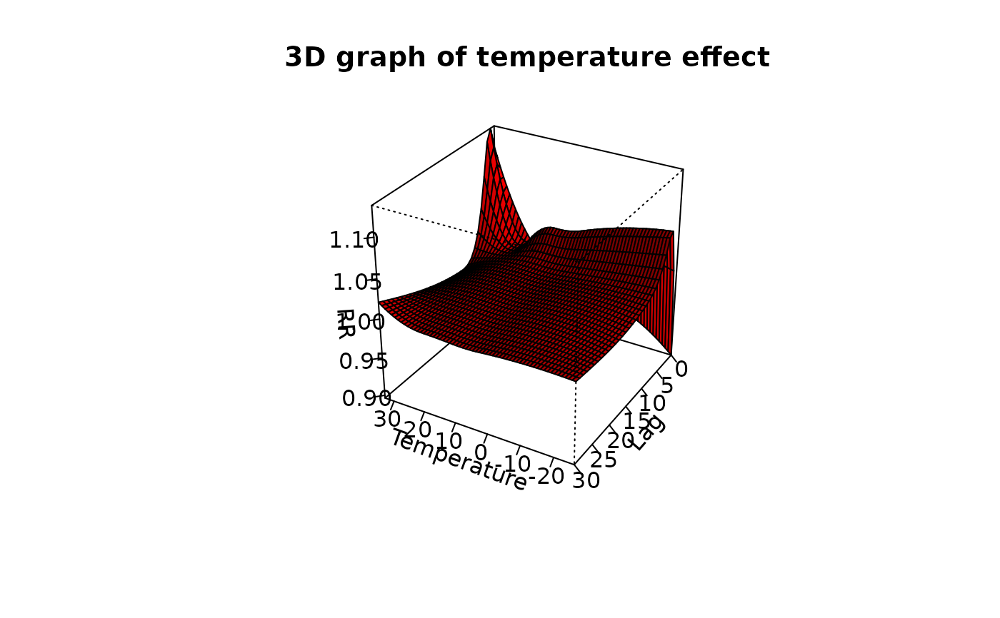

logknots.RdThis function defines the position of knot or cut-off values at equally-spaced log-values for spline or strata functions, respectively. It is expressely created for lag-response functions to set the knots or cut-offs placements accordingly with the default of versions of dlnm earlier than 2.0.0.
logknots(x, nk=NULL, fun="ns", df=1, degree=3, intercept=TRUE)an integer scalar or vector of length 2, defining the the maximum lag or the lag range, respectively, or a vector variable.
number of knots or cut-offs.
character scalar with the name of the function for which the knots or cut-offs must be created. See Details below.
degree of freedom.
degree of the piecewise polynomial. Only for fun="bs".
logical. If an intercept is included in the basis function.
This functions has been included for consistency with versions of dlnm earlier than 2.0.0, where the default knots or cut-off placements in the lag space for functions ns, bs and strata used to be at equally-spaced values in the log scale. Since version 2.0.0 on, the default is equally-spaced quantiles, similarly to functions defined for the space of predictor. This function can be used to replicate the results obtained with old versions.
The argument x is usually assumed to represent the maximum lag (if a scalar) or the lag range (if a vector of length 2). Otherwise is interpreted as a vector variable for which the range is computed internally.
The number of knots is set with the argument nk, or otherwise determined by the choice of function and number of degrees of freedom through the arguments fun and df. Specifically, the number of knots is set to df-1-intercept for "ns", df-degree-intercept for "bs", or df-intercept for "strata".
An intercept is included by default (intercept=TRUE), consistently with the default for the lag space.
A numeric vector of knot or cut-off values, to be used in the arglag list argument of crossbasis for reproducing the default of versions of dlnm earlier than 2.0.0.
equalknots for placing the knots at equally-spaced values. crossbasis to generate cross-basis matrices.
See dlnm-package for an introduction to the package and for links to package vignettes providing more detailed information.
### setting 3 knots for lag 0-20
logknots(20, 3)
#> [1] 0.9989336 2.7124876 7.3654431
logknots(c(0,20), 3)
#> [1] 0.9989336 2.7124876 7.3654431
### setting knots and cut-offs for different functions
logknots(20, fun="ns", df=4)
#> [1] 1.393628 5.279448
logknots(20, fun="bs", df=4, degree=2)
#> [1] 2.712488
logknots(20, fun="strata", df=4)
#> [1] 0.9989336 2.7124876 7.3654431
### with and without without intercept
logknots(20, fun="ns", df=4)
#> [1] 1.393628 5.279448
logknots(20, fun="ns", df=4, intercept=FALSE)
#> [1] 0.9989336 2.7124876 7.3654431
### replicating an old example in time series analysis
lagknots <- logknots(30, 3)
cb <- crossbasis(chicagoNMMAPS$temp, lag=30, argvar=list(fun="bs",df=5,
degree=2), arglag=list(knots=lagknots))
summary(cb)
#> CROSSBASIS FUNCTIONS
#> observations: 5114
#> range: -26.66667 to 33.33333
#> lag period: 0 30
#> total df: 25
#>
#> BASIS FOR VAR:
#> fun: bs
#> knots: 1.666667 10.55556 19.44444
#> degree: 2
#> intercept: FALSE
#> Boundary.knots: -26.66667 33.33333
#>
#> BASIS FOR LAG:
#> fun: ns
#> knots: 1.105502 3.322105 9.983144
#> intercept: TRUE
#> Boundary.knots: 0 30
#>
library(splines)
model <- glm(death ~ cb + ns(time, 7*14) + dow,
family=quasipoisson(), chicagoNMMAPS)
pred <- crosspred(cb, model, cen=21, by=1)
plot(pred, xlab="Temperature", col="red", zlab="RR", shade=0.6,
main="3D graph of temperature effect")
